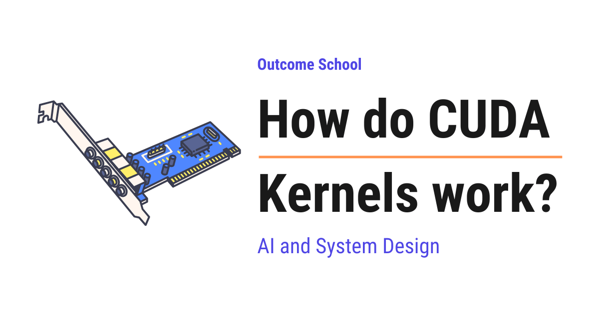

How do CUDA Kernels work?
On this page
- Why do we need a GPU?
- What is CUDA?
- What is a CUDA Kernel?
- Threads, Blocks, and Grids
- Host and Device
- Writing our first CUDA Kernel
- How a thread finds its own work
- What happens inside the GPU when a kernel runs
- Memory in CUDA
- Why CUDA Kernels matter for AI
- Where CUDA Kernels work well and where they fail
- Summary
- Frequently Asked Questions

A CUDA Kernel is a function that runs on the GPU and is executed by many threads at the same time, where each thread finds and does its own small part of the work.
In this blog, we will learn about how CUDA Kernels work, the small programs that run on a GPU and do the heavy lifting behind almost every modern AI model. We will also see why we need a GPU at all, what CUDA is, what a kernel is, how thousands of threads run the same kernel at the same time, how each thread finds its own piece of work, what happens inside the GPU when a kernel runs, and where CUDA Kernels work well and where they fail.
We will cover the following:
- Why do we need a GPU?
- What is CUDA?
- What is a CUDA Kernel?
- Threads, Blocks, and Grids
- Host and Device
- Writing our first CUDA Kernel
- How a thread finds its own work
- What happens inside the GPU when a kernel runs
- Memory in CUDA
- Why CUDA Kernels matter for AI
- Where CUDA Kernels work well and where they fail
- Summary
Let's get started.
Why do we need a GPU?
Before jumping into CUDA Kernels, we must know why we need a GPU at all.
A CPU (Central Processing Unit) is the main brain of our computer. It is very smart and very fast at doing one task after another. Most CPUs today have a few cores, let's say 4, 8, or 16. A core is one unit that can do one thing at a time.
A GPU (Graphics Processing Unit) is a different kind of chip. It was originally built to draw pictures on the screen. Drawing a picture means calculating the color of millions of tiny dots called pixels, and the good thing is that each dot can be calculated separately, without waiting for the others. So, a GPU was designed to have thousands of small cores that all work at the same time. Working on many things at the same time is called working in parallel.
Let's say we have a big kitchen and we need to peel 10,000 potatoes.
- A CPU is like one master chef. The master chef is very skilled and very fast, but can peel only one potato at a time.
- A GPU is like 5,000 helpers. Each helper is slower than the master chef, but all 5,000 of them peel potatoes at the same time.
For peeling 10,000 potatoes, the 5,000 helpers will win easily.
Now, think about AI. Training or running an AI model means doing millions of small multiplications and additions. And most of these calculations do not depend on each other. This is exactly the "peeling potatoes" kind of work. So, here comes the GPU to the rescue.
But, here is the catch. A GPU cannot decide on its own what to do. Someone has to write a program that tells all those thousands of small cores what work to do. This is where CUDA comes into the picture.
What is CUDA?
CUDA (Compute Unified Device Architecture) is a platform created by NVIDIA, the company that makes most of the GPUs used for AI, that lets us write programs that run on the GPU.
In simple words, CUDA is a way to write normal-looking code, in languages like C, C++, Python and etc., and make it run on thousands of GPU cores at the same time.
Before CUDA, if we wanted to use a GPU for something other than graphics, we had to trick the GPU by pretending our data was a picture. That was very painful. We needed a solution for that, and CUDA was introduced to solve this problem. With CUDA, we can directly tell the GPU: "Here is my data, here is the work, do it in parallel."
Now, the question is, how do we tell the GPU what work to do? The answer is: by writing a kernel.
What is a CUDA Kernel?
A CUDA Kernel is a function that runs on the GPU, and it is executed by many threads at the same time.
Let's break this down.
A function is just a piece of code that does one job. We must be knowing this from any programming language.
A thread is one worker that runs the code. In simple words, a thread is one helper from our kitchen example.
So, CUDA Kernel = Function + Runs on GPU + Executed by thousands of threads together.
Here is the most important idea, and I want you to remember this:
We write the kernel once, as if it is for a single thread. Then the GPU runs that same kernel thousands of times in parallel, once per thread.
Let's go back to the kitchen. We do not write 5,000 different instructions for 5,000 helpers. We write one instruction: "Pick up a potato and peel it." Then all 5,000 helpers follow the same instruction at the same time. The only difference is, each helper picks up a different potato.
That is exactly how a CUDA Kernel works. One instruction, thousands of workers, and each worker handles a different piece of data.
Now, we have understood what a CUDA Kernel is.
Threads, Blocks, and Grids
Now, if we have thousands of threads, we need some way to organize them. Otherwise, it will be a mess. CUDA organizes threads in three levels.
- Thread: A single worker. It runs the kernel code once.
- Block: A group of threads. Let's say 256 threads in one block. Threads inside the same block can talk to each other and share a small amount of memory.
- Grid: A group of blocks. All the blocks together make up one kernel launch.
So, Grid = Many Blocks, and Block = Many Threads.
Let's understand this with our kitchen.
- A thread is one helper.
- A block is one team of helpers standing at one table. They can pass things to each other easily because they are at the same table.
- A grid is the whole kitchen with all the tables.
When we launch a kernel, we tell CUDA two things: how many blocks we want, and how many threads we want in each block. CUDA then creates all those threads and runs the kernel on each one.
Note: There is a limit on how many threads can be in one block, usually 1024. That is why we use many blocks. There is no practical limit on the number of blocks, so we can have millions of threads in total.
Now that we have learned how threads are organized, it's time to learn how the CPU and the GPU talk to each other.
Host and Device
Before writing the code, we need to understand two words that we will see everywhere in CUDA.
- Host: The CPU and its memory (RAM, the main memory of the computer).
- Device: The GPU and its own memory (VRAM, the memory that sits on the graphics card itself).
The host and the device have separate memory. For the sake of understanding, assume that the CPU cannot directly read the GPU memory, and the GPU cannot directly read the CPU memory. So, whenever we want the GPU to work on some data, we must copy that data from the host to the device. And when the work is done, we must copy the result back from the device to the host.
Means, a CUDA program always follows these steps:
Step 1: Prepare the data on the host (CPU).
Step 2: Allocate memory on the device (GPU). Allocate just means reserve some space for our data.
Step 3: Copy the data from host to device.
Step 4: Launch the kernel on the device.
Step 5: Copy the result from device back to host.
Step 6: Free the device memory, which means give the reserved space back.
Think of it like this. The master chef (CPU) has all the potatoes in the store room. The helpers (GPU) work in a different room. So, the chef must carry the potatoes to the helpers' room, let them peel, and then carry the peeled potatoes back. The carrying takes time, and we will see later why this matters.
Writing our first CUDA Kernel
The best way to learn this is by taking an example.
Let's say we have two lists of numbers, a and b, each with one million numbers. We want to add them and store the result in a third list c. Means, c[i] = a[i] + b[i] for every position i.
First, let's see how we do this on a CPU without CUDA:
void add(int n, float *a, float *b, float *c) {
for (int i = 0; i < n; i++) {
c[i] = a[i] + b[i];
}
}
Here, we have a function named add. The word void means the function does not return anything. float means a number with a decimal point, and float *a means a list of such numbers. Inside, we have a loop that goes from 0 to n - 1. In each step, it adds one pair of numbers. For one million numbers, this loop runs one million times, one after another. One master chef, one potato at a time.
Now, let's see the same thing as a CUDA Kernel:
__global__ void add(int n, float *a, float *b, float *c) {
int i = blockIdx.x * blockDim.x + threadIdx.x;
if (i < n) {
c[i] = a[i] + b[i];
}
}
Here, we can notice a few things:
__global__is a special keyword. It tells CUDA that this function is a kernel. It will be called from the host (CPU) and will run on the device (GPU).- One more thing to notice, the loop is gone. There is no
forloop anymore. Each thread handles only onei. The GPU will run this function one million times in parallel, once for each thread, and each thread will take care of one position. int i = blockIdx.x * blockDim.x + threadIdx.x;is how each thread finds out whichiit is responsible for. Do not worry, we will understand this line in detail in the next section.if (i < n)is a safety check. Sometimes we launch a few more threads than the number of items. This check makes sure the extra threads do nothing.
This is the whole kernel. Just a few lines. And it does the work of one million loop iterations at once.
Now, let's see how we launch this kernel from the host (CPU):
int n = 1000000;
int threadsPerBlock = 256;
int blocks = (n + threadsPerBlock - 1) / threadsPerBlock;
add<<<blocks, threadsPerBlock>>>(n, d_a, d_b, d_c);
Here, we have:
threadsPerBlock = 256means each block will have 256 threads.blocks = (n + threadsPerBlock - 1) / threadsPerBlockcalculates how many blocks we need to cover all one million numbers. This formula is just a trick to round up. For one million numbers and 256 threads per block, we get 3907 blocks. 3907 multiplied by 256 gives 1,000,192 threads, which is a little more than one million. That is why we needed theif (i < n)check inside the kernel.<<<blocks, threadsPerBlock>>>is the special CUDA syntax for launching a kernel. The three angle brackets tell CUDA: "Run this function with this many blocks and this many threads per block."d_a,d_b,d_care the addresses of our data in the device memory. In simple words, they tell the kernel where the data lives on the GPU. Thed_prefix is just a naming convention that means "device". We copied our data there before calling the kernel.
Let's see the complete flow with the memory steps we discussed earlier:
// Step 1: a, b, and c are already prepared on the host
// Step 2: Allocate memory on the device
float *d_a, *d_b, *d_c;
cudaMalloc(&d_a, n * sizeof(float));
cudaMalloc(&d_b, n * sizeof(float));
cudaMalloc(&d_c, n * sizeof(float));
// Step 3: Copy data from host to device
cudaMemcpy(d_a, a, n * sizeof(float), cudaMemcpyHostToDevice);
cudaMemcpy(d_b, b, n * sizeof(float), cudaMemcpyHostToDevice);
// Step 4: Launch the kernel
add<<<blocks, threadsPerBlock>>>(n, d_a, d_b, d_c);
// Step 5: Copy result from device to host
cudaMemcpy(c, d_c, n * sizeof(float), cudaMemcpyDeviceToHost);
// Step 6: Free the device memory
cudaFree(d_a);
cudaFree(d_b);
cudaFree(d_c);
Here, we have:
cudaMallocreserves space in the GPU memory. In simple words, it tells the GPU: "Keep this much space ready for my data."cudaMemcpycopies data between host and device. The last argument tells the direction:cudaMemcpyHostToDeviceorcudaMemcpyDeviceToHost.- The kernel launch line is the same as before.
cudaFreereleases the GPU memory once we are done.
It works perfectly. All one million additions are done in parallel by the GPU.
Note: CUDA code is saved in a file with the .cu extension and compiled using a special tool from NVIDIA called nvcc. It understands both the normal C++ code for the host and the kernel code for the device.
How a thread finds its own work
Now, let's understand the most important line in our kernel:
int i = blockIdx.x * blockDim.x + threadIdx.x;
Remember, every thread runs the exact same code. So, how does each thread know which number to add? The answer is: CUDA gives every thread some built-in variables that tell it where it is. These variables are called indexes, and index just means the position number, starting from 0.
threadIdx.xis the index of the thread inside its block. If a block has 256 threads, this goes from0to255.blockIdx.xis the index of the block inside the grid. If we have 3907 blocks, this goes from0to3906.blockDim.xis the number of threads in each block. In our case, it is256.
So, the global index i is calculated as below:
i = (block number) * (threads per block) + (thread number inside the block)
Let's take an example for the sake of understanding.
- Thread 0 in Block 0:
i = 0 * 256 + 0 = 0 - Thread 5 in Block 0:
i = 0 * 256 + 5 = 5 - Thread 0 in Block 1:
i = 1 * 256 + 0 = 256 - Thread 10 in Block 2:
i = 2 * 256 + 10 = 522
Every thread gets a unique i, and no two threads get the same i. This is how the same code, running on thousands of threads, works on different data.
Let's go back to the kitchen one last time. Every helper has a table number (blockIdx) and a seat number at that table (threadIdx). Each table has 256 seats (blockDim). So, a helper at table 2, seat 10 knows that the potato to pick is number 522. The helper does not need to ask anyone. The helper just calculates it and picks up potato number 522.
Note: We used .x everywhere because CUDA allows threads and blocks to be arranged in one dimension (like a line), two dimensions (like a grid on paper), or three dimensions (like a cube). For a simple list, one dimension is enough. For an image or a matrix, two dimensions are natural, and we would also use .y. The idea remains the same.
Now, we have understood how a thread finds its own work.
What happens inside the GPU when a kernel runs
Till now, we have learned how to write and launch a kernel. Now, let's see what the GPU actually does with it.
A GPU is made of many Streaming Multiprocessors (SMs). In simple words, an SM is one big work unit inside the GPU that contains many small cores. A modern GPU can have more than 100 SMs.
When we launch a kernel with 3907 blocks, CUDA does not run all of them at once. It distributes the blocks to the SMs. Each SM takes a few blocks, finishes them, and then takes the next few. This continues until all the blocks are done.
Inside an SM, threads do not run one by one either. The SM groups threads into bunches of 32, and this bunch is called a warp. All 32 threads in a warp execute the same instruction at the same moment. That is why CUDA is so fast. One instruction is fetched once and applied to 32 threads together.
Let's connect this to our kitchen. The kitchen (GPU) is divided into many sections (SMs). Each section handles a few tables (blocks) at a time. At every table, the helpers (threads) are organized in rows of 32 (warps). The head of the table says one instruction, "peel", and all 32 helpers in a row do it together.
But, here is the catch. Because all 32 threads in a warp must run the same instruction, if our kernel has an if condition and some threads go one way and some go the other way, the warp has to run both paths one after another. This is called warp divergence, and it slows things down. That is why good CUDA kernels try to keep the threads doing the same thing as much as possible.
Note: Our if (i < n) check causes divergence only in the very last block, so it is not a problem in practice.
Memory in CUDA
We have already seen that the host and device have separate memory. Now, let's look inside the device memory, because this is where most of the performance comes from.
There are three main types of memory in a GPU that we must know about:
- Global Memory: This is the big memory of the GPU (the VRAM, let's say 24 GB or 80 GB). All threads can read and write it. This is where
d_a,d_b, andd_clive. It is large but slow, because it is far from the cores. - Shared Memory: This is a small, very fast memory inside each SM. Only the threads of the same block can use it. It is like a whiteboard at each table that all helpers at that table can see and write on.
- Registers: These are the fastest memory of all, and each thread gets its own. Our variable
ilives in a register. It is like the notepad in each helper's hand.
Global memory is around 100 times slower than shared memory. So, a common trick in CUDA programming is: load a chunk of data from global memory into shared memory once, let all the threads in the block work on it many times from shared memory, and then write the result back to global memory.
For our simple addition example, each number is used only once, so shared memory does not help. But for matrix multiplication (multiplying large tables of numbers, which we will see in the next section), where the same numbers are used again and again, this trick makes a huge difference. We have a detailed blog on Flash Attention that explains how this exact trick makes attention in LLMs much faster.
This was all about the memory in CUDA. Now, let's connect all of this to AI.
Why CUDA Kernels matter for AI
An AI model, like an LLM (Large Language Model, the kind of model behind ChatGPT), is basically a very large collection of numbers called weights. When we give it an input, the model multiplies the input with those weights, adds them up, applies a few simple mathematical functions, and repeats this many times across many layers. Almost everything inside an AI model is matrix multiplication, which means multiplying and adding large tables of numbers.
A matrix multiplication with millions of numbers is the perfect "peeling potatoes" problem. Every output number can be calculated independently. So, we write one CUDA kernel for matrix multiplication and launch it with millions of threads.
When we use a library like PyTorch (a popular tool for building AI models) and write torch.matmul(a, b), we are not writing any CUDA code ourselves. But behind the scenes, PyTorch calls a highly optimized CUDA kernel written by NVIDIA. These kernels come from NVIDIA libraries like cuBLAS, which is a collection of ready-made kernels for math operations. They do exactly what we learned today, but with many more tricks for speed. We have a detailed blog on how TensorRT-LLM works that covers how NVIDIA fuses and tunes these kernels to run an LLM as fast as possible.
So, every time an LLM generates a word, thousands of CUDA kernels are launched on the GPU, one after another. Every step inside the model, whether it is a big matrix multiplication or a small mathematical function, is a CUDA kernel. This is why we cannot imagine modern AI without GPUs and CUDA.
Where CUDA Kernels work well and where they fail
CUDA Kernels work well when:
- The same operation has to be done on a large amount of data, like matrix multiplication, image processing, and scientific simulations.
- The calculations for different pieces of data do not depend on each other.
- The amount of work is big enough that the time saved is more than the time spent copying data between host and device.
CUDA Kernels fail or do not help when:
- The task is small. Copying 10 numbers to the GPU and back takes more time than adding them on the CPU. Carrying potatoes to the other room is not worth it for 10 potatoes.
- The work is sequential. If step 2 needs the result of step 1, and step 3 needs the result of step 2, then thousands of threads cannot help. Only one thread can work at a time.
- The threads keep taking different paths. Heavy branching causes warp divergence, and the GPU ends up doing things one by one.
- The data is too big for the GPU memory. Then we have to keep moving data in and out, and the copying becomes the bottleneck.
Let me tabulate the differences between CPU and GPU for your better understanding.
| CPU | GPU |
|---|---|
| Few powerful cores, let's say 4 to 64 | Thousands of small cores |
| Great at doing one task after another | Great at doing the same task on lots of data at once |
| Good for logic, decisions, and running the operating system | Good for math on big lists and tables of numbers, graphics, and AI |
| No copying needed, data is already in RAM | Data must be copied to the GPU and back |
So, we must choose between the CPU and the GPU based on our use case.
Summary
Let's summarize what we have learned.
- A GPU has thousands of small cores that work at the same time. It is built for doing the same operation on a lot of data.
- CUDA is the platform from NVIDIA that lets us write programs for the GPU.
- A CUDA Kernel is a function that runs on the GPU and is executed by thousands of threads in parallel.
- We write the kernel once, for a single thread. The GPU runs it thousands of times, and each thread finds its own piece of data using
blockIdx,blockDim, andthreadIdx. - Threads are organized into blocks, and blocks are organized into a grid.
- The host (CPU) and the device (GPU) have separate memory, so we allocate, copy, launch, copy back, and free.
- Inside the GPU, blocks run on SMs, and threads run in warps of 32.
- Global memory is big but slow, shared memory is small but fast, and registers are the fastest.
- Almost every operation in an AI model is a CUDA kernel running behind the scenes.
This is how CUDA Kernels work.
Frequently Asked Questions
Do we need to write CUDA code to use a GPU with PyTorch?
No. When we write torch.matmul(a, b) in PyTorch, we do not write any CUDA code ourselves. Behind the scenes, PyTorch calls a highly optimized CUDA Kernel written by NVIDIA, from libraries like cuBLAS, which is a collection of ready-made kernels for math operations.
Why does a CUDA Kernel need the if (i < n) check?
Because we often launch a few more threads than the number of items. The number of blocks is rounded up, so for one million numbers and 256 threads per block, we get 3907 blocks and 1,000,192 threads. The if (i < n) check makes sure the extra threads do nothing.
How many threads can one CUDA block have?
Usually up to 1024 threads. That is why we use many blocks in one kernel launch. There is no practical limit on the number of blocks, so a single kernel can run millions of threads in total.
What is warp divergence in CUDA?
Warp divergence happens when threads in the same warp take different paths in an if condition. All 32 threads in a warp must run the same instruction, so the warp has to run both paths one after another, and this slows things down. Good CUDA Kernels keep the threads doing the same thing as much as possible.
How is CUDA code compiled?
CUDA code is saved in a file with the .cu extension and compiled using nvcc, a special tool from NVIDIA. It understands both the normal C++ code for the host (CPU) and the kernel code for the device (GPU).